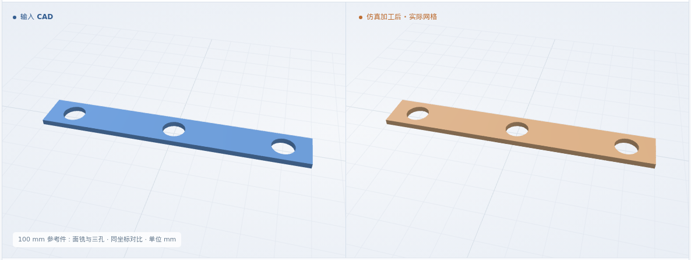

矩形三孔板 · 软件参考件
100 × 14 × 3 mm 来料 → 厚 2 mm · 3 × φ8.5 通孔
通用 XYZ · φ4 平底铣刀 · 6061-T6 材料标签
体积 IoU99.9563%

本次新增：三个中间工步的 0.025 mm 精检，21 项检查通过；回放同步采用精检后的实际剩料。
体积 IoU = 原 CAD 与实际剩料的交集 / 并集
100 × 14 × 3 mm 来料 → 厚 2 mm · 3 × φ8.5 通孔
通用 XYZ · φ4 平底铣刀 · 6061-T6 材料标签

13 项软件几何检查通过 · 多余材料 0.9415 mm³ · 缺失材料 0.1325 mm³。逐项记录 ↗
毛坯 → 面铣 → H1 → H2 → H3 完成
| 工步结束时 | 体积 IoU | 几何检查 | 记录 |
|---|---|---|---|
| 面铣完成 | 99.9885% | 4 项通过 | 目标 CAD · 验收 · 原网格 |
| H1 铣孔完成 | 99.9787% | 7 项通过 | 目标 CAD · 验收 · 原网格 |
| H2 铣孔完成 | 99.9680% | 10 项通过 | 目标 CAD · 验收 · 原网格 |
| H3 完成 · 最终 | 99.9563% | 13 项通过 | 目标 CAD · 验收 · 原网格 |
每步与 NC 生成前存档的对应目标 CAD 比较；从原始毛坯执行累计 NC，检查条件不变。
三维回放暂不可用；上方图片和形状下载仍可查看。
核对工步顺序、几何绑定、原始毛坯和刀具参数；缺项或冲突时停止。
查看验收记录 ↗原生 CAD 复核与方案一致；核对最终 NC 的工序、刀具、切深和覆盖。导出的 NC 保持原样。
查看验收记录 ↗64 块实际剩料组成闭合表面，统一计算交集与并集；再测厚度、顶面、外缘及三孔。
查看验收记录 ↗最终几何：尺寸允许量 0.1 mm，数值保护带 0.05 mm；25 个保留面探测点、11 个截面、每孔 9 条贯穿线。原坐标直接比较。
中间回放与逐工步精检使用同一批 0.025 mm 实际结果。显示网格仅重新划分平面三角形，定量检查保留完整原始网格。
本页为矩形单件参考，未包含圆头外形和真实拼板；夹具、粗糙度及制造公差尚未验收。其他组合与尺寸见 S4 总览。